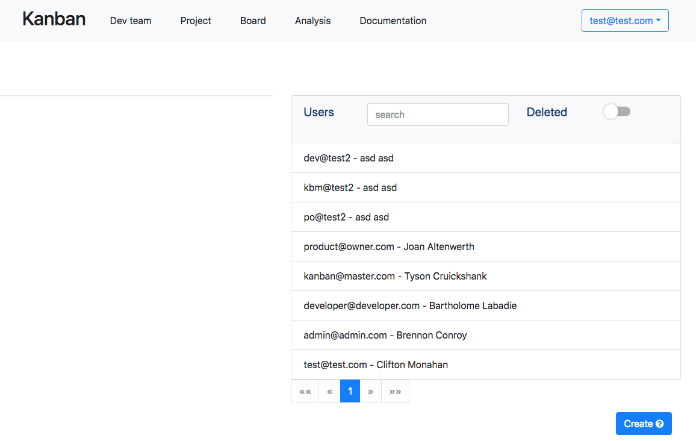
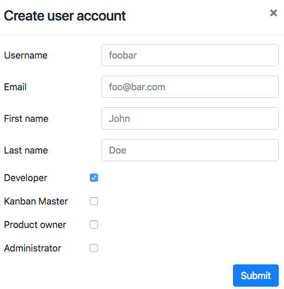
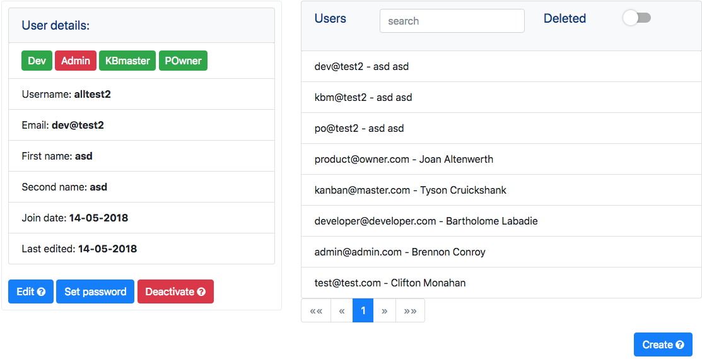
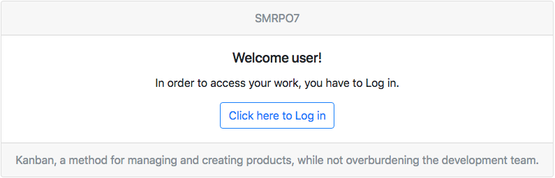
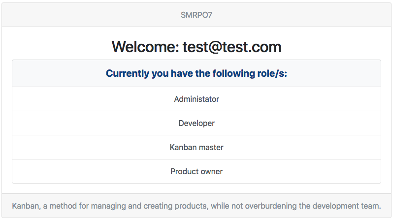
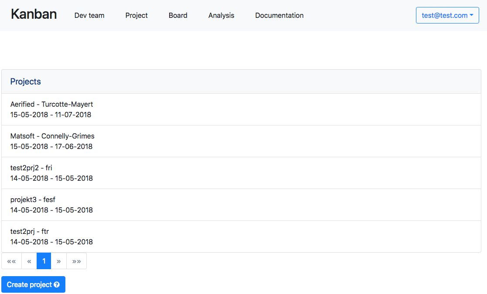
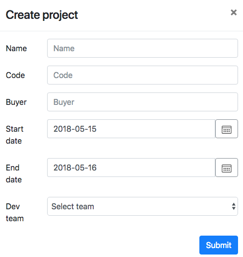
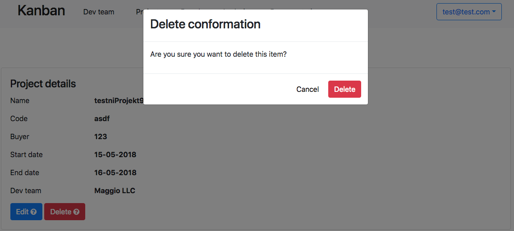
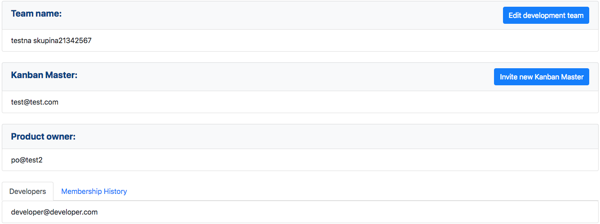
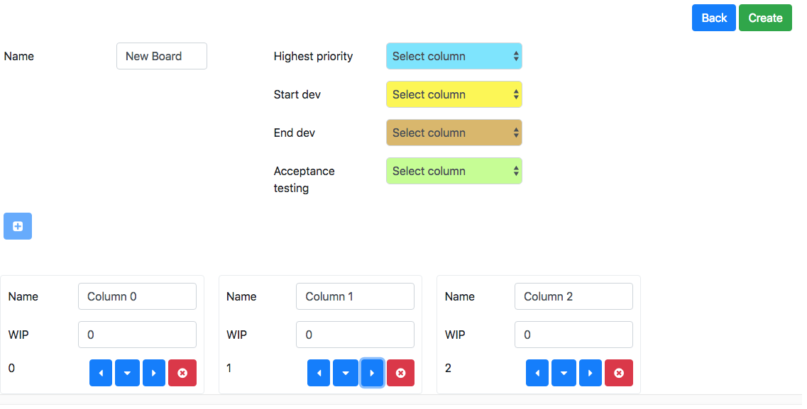

Uvod
Dobrodošli v dokumentaciji Smrpo7 Kanban sistema.
Navodila za uporabo
V datoteki includes/_user_manual.md se bo pisalo navodila za uporabo.
Vzdrževanje uporabnikov
Vzdrževanje uporabnikov se izvaja preko administratorske /admin, ki je na voljo le uporabnikom v vlogi administratorja.
|  |
|---|
Administratorska stran /admin |
Dodajanje novega uporabnika
Na administrativni strani /admin s klikom na gumb create, administrator lahko ustvari novega uporabnika.
|  |
|---|
| Obrazec za dodajanje novega uporabnika. Vsi podatki so obvezni. |
Pregled uporabnikov
Administratorju je omogočeno pregledovanje in iskanje vseh uporabnikov. Na administrativni strani /admin lahko administrator pregleda ustvarjene uporabnike.
Išče lahko po ključni besedi z iskalnim poljem, hkrati lahko išče tudi po statusu aktivnosti z klikom na okno Deleted. Za izpis podrobnosti je treba z klikom miške izbrati željenega uporabnika.
Z izbiro uporabnika se izpišejo njegove podrobnosti in njegove možne vloge. Rdeča barva pomeni da uporabnik nima te vloge.
|  |
|---|
Prikaz izpisa za uporabnika dev@test2 |
Dodajanje ali spreminjanje gesla
Administrator lahko ponastavi geslo z klikom na gumb Set password, ki se nahaja v oknu s podrobnostmi uporabnika. Geslo mora vsebovati osem znakov, ki morajo vključevati vsaj eno število in eno črko.
Upravljanje s pravicami uporabnika
Administrator ob ustvarjanju ali ob urejanju uporabniškega profila preko gumba Edit, lahko nastavlja vloge v katerih uporabnik nastopa.
| Vloga | Pomen |
|---|---|
| ADMINISTRATOR | Skrbnik sistema |
| DEVELOPER | Uporabnik, usposobljen za razvijalca |
| KANBAN_MASTER | Uporabnik, ki je usposobljen za vlogo Kanban Master |
| PRODUCT_OWNER | Uporabnik, ki je usposobljen za vlogo Product Owner-ja |
Onemogočanje uporabniškega računa
Administrator lahko s klikom na gumb Deactivate na oknu z uporabniškimi podrobnostmi onemogoči uporabniški račun.
Ponovno ga nato lahko aktivira s klikom na gumb Activate.
Vpis uporabnikov v sistem
|  |
|---|
Prikaz strani dashboard |
Uporabniki se lahko vpisujejo v sistem na strani dashboard preko gumba Log in. Ta jih preusmeri na prijavno okno, kjer vpišejo svoje uporabniško ime ali elektronsko pošto in geslo. Če uporabnik napačno vnese geslo tri krat zapored se račun začasno blokira za 10 sekund, kar se nato povečuje z dodatnimi poskusi vnosa napačnega gesla. Ob uspešni prijavi je uporabnik preusmerjen na pozdravno stran.
|  |
|---|
Pozdravna stran uporabnika test |
Vzdrževanje projektov
Omogoča kreiranje, urejanje in brisanje projektov. Te funkcije so na voljo le uporabnikom z vlogo Kanban Master.
|  |
|---|
Stran /project za pregled in ustvarjanje projektov |
Kreiranje novega projekta
Do obrazca za kreiranje projektov pridemo tako, da v orodni vrstici izberemo Projects in nato kliknemo gumb Create project.
V obrazec moramo vnesti ime projekta, naročnika, datum začetka in konca ter iz seznama izbrati razvojno ekipo.
Pri izpolnjevanju moramo upoštevati naslednje omejitve:
- datum pričetka mora biti manjši ali enak trenutnemu
- datum zaključka mora biti večji od trenutnega datuma
- predvideni datum zaključka mora biti večji od datuma pričetka
Po končanem vnosu podatkov, kliknemo gumb Submit. Če so bili vsi podatki pravilno vnešeni in omejitve upoštevane, se projekt ustvari. V nasprotnem primeru se nam prikaže opozorilo, ki nam pove, katera polja so bila napačno vnešena.
|  |
|---|
| Formular za ustvarjanje novega projekta. Vsi podatki so obvezni, veljajo zgornje omejitve |
Urejanje projekta
Projekte lahko po kreiranju tudi urejamo. V orodni vrstici moramo izbrati Projects, tako dostopamo do strani /project in nato kliknemo na projekt, ki ga želimo urediti. Odprejo se nam podrobne informacije, pod katerimi se nahaja gumb Edit. Ob kliku na ta gumb se nam odpre obrazec za urejanje. Uredimo lahko enaka polja kot pri kreiranju, pri čemer moramo upoštevati zgoraj omenjene omejitve. V primeru, da smo na projektu že začeli z delom in smo mu že določili kartice, datuma začetka ne moramo več spreminjati.
Brisanje projekta
Če želimo projekt izbrisati, moramo v orodni vrstici izbrati Projects, klikniti na projekt, ki ga želimo izbrisati in klikniti na gumb Delete. Pojavi se nam potrditveno okno, kjer ponovno kliknemo Delete in tako izbrišemo projekt.
|  |
|---|
| Potrditveno okno za izbris |
Vzdrževanje razvojnih skupin
Omogoča kreiranje, urejanje in vpogled v razvojne skupine. Ustvarjanje in urejanje je omogočeno le uporabniku z vlogo Kanban Master. Do strani z pregledom nad razvojnimi skupinami [/dev-team] pridemo tako, da v orodoni vrstici kliknemo na gumb Dev team
Kreiranje razvojne skupine
Do obrazca za kreiranje razvojne skupine pridemo tako, da kliknemo gumb Create project, ki se nahaja na strani [/dev-team]. V obrazec moramo vnesti ime razvojne skupine, naročnika, ter iz seznama izbrati razvijalce. Pri izpolnjevanju moramo upoštevati naslednje omejitve:
Kanban Masterje vedno uporabnik ki ustvarja razvojno skupino (Kasneje lahko v vlogo povabi drugega uporabnika).- Povabiti mora enega ali več razvijalcev
Po končanem vnosu podatkov, kliknemo gumb Submit. Če so bili vsi podatki pravilno vnešeni in omejitve upoštevane, se razvojna skupina ustvari. V nasprotnem primeru se nam prikaže opozorilo, ki nam pove, katera polja so bila napačno vnešena.
 |
|---|
| Formular za ustvarjanje Razvojne skupine |
Urejanje razvojne skupine
Razvojne skupine lahko po kreiranju tudi urejamo. V orodni vrstici moramo izbrati zavihek Dev team in nato klikniti na razvojno skupino, katero želimo urejati. Odprejo se nam podrobnosti izbrane razvojne skupine. Na desni strani se nahajata gumba za urejanje razvojne skupine in povabitev novega kanban mastra.
|  |
|---|
| Gumba za urejanje Razvojne skupine |
Urejanje imena in vlog v razvojni skupini
Z klikom na gumb Edit development team se nam odpre obrazec, v katerem lahko spremenimo ime skupine, product ownerja in dodajamo ali odstranjamo razvijalce. Razvojno skupino je mozno urejati le v okvirju kriterijev, ki so enaki kot ob ustvarjanju nove razvojne skupine. Treba je poskrbeti, da so vse vloge pravilno zastopane. Ob nepravilnem izboru, nas sistem opozori in ne dopusti dokončanja urejanja.
Urejanje končamo z klikom na gumb SUBMIT.
Urejanje vloge Kanban Master
Z klikom na gumb Invite new Kanban Master lahko v razvojno skupino povabimo novega Kanban Mastra. Ob kliku se nam odpre seznam z možnimi uporabniki, ki so vsposobljeni prevzeti to vlogo. Ko z klikom na gumb Select svojo izbiro potrdimo, se izbranemu uporabniku poslje povabilo v razvojno skupino.
Urejanje table
Omogoča kreiranje, urejanje in brisanje table. Te funkcije so na voljo le uporabnikom z vlogo Kanban Master.
Ustvarjanje table
Z obiskom strani /board se prikažejo vse table do katerih uporabnik lahko dostopa. Če je uporabnik v vlogi Kanban Master, lahko ustvari novo tablo s klikom na gumb Create.
To ga bo preusmerilo na stran /board-edit, kjer se bo prikazal seznam z lokalno shranjenimi tablami. Te table se še niso ustvarile v bazi in se hranijo lokalo izključno za urejanje.
S klikom na gumb + ustvarimo prvi stolpec. Naslednje stolpce nato ustvarjamo za klikom na modre gumbke z puščicami. Mozno je ustvariti stolpec levo, desno in podstolpec. Ko imamo željeno obliko table, s klikom gumb Create ustvarimo tablo.
|  |
|---|
| Kreiranje table |
Urejanje table
Ustvarjeno tablo naknadno lahko tudi spreminjamo. Z na strani /board klikom na tablo obiščemo stran /board/{id_tabele}, ki vsebuje podrobnosti tabele in hkrati tudi gumb Edit, ki je dovoljen uporabniku v vlogi Kanban Mastra. Z klikom na gumb Edit obiščemo stran /board/{id_tabele}/edit, kjer lahko spreminjamo tablo. Možno je dodajanje in odvzemanje obstoječih projektov. Dodajamo in spreminjamo lahko tudi stolpce, ki ne vsebujejo kartic.
Prikaz table
Na strani /board so prikazane vse table dostopne vpisanemu uporabniku. Za bolj podroben pogled lahko uporabnik klikne na željeno tablo, kar ga preusmeri na stran /board/{id_table} z podrobnostmi table.
Kopiranje table
Ustvarjene tablo lahko na strani za urejanje /board/{id_tabele}/edit kopiramo z klikom na gumb Copy, kar bo ustvarilo in preusmerilo uporabnika na novo lokalno tablo, ki je strukturno enaka.
Kartice
Kartice predstavljajo naloge, ki jih je za realizacijo projekta treba narediti. Kartice so dveh vrst, navadne in z Ćvišjo prioriteto" (Silver Bullet)
Ustvarjanje kartic
Navadne artice lahko ustvarja uporabnik v vlogi Product Ownerja, na projektu kjer zastopa to vlogo. Kartice ustvarja preko gumba Create card, ki se nahaja na strani s podrobnostmi določenega projekta project/projectID (dostopno preko navigacijskega gumba Project -> izbira_projekta). S klikom na gumb Create card se odpre formular za ustvarjanje kartice.
Kartica mora obvezno vsebovati naslednje parametre:
| Parameter | Pomen |
|---|---|
| ime | ime naloge/kartice |
| opis | opis funkcionalnosti |
| barva | barva kartice, ki bo vidna na tabli |
| * ocena zahtevnosti | opcijski parameter, število ur |
Ustvarjanje Kartice "Silver Bullet""
V nasprotju z normalnimi karticami, predstavlja "Silver Bullet" kartico z nujno zahtevo. Takšno kartico lahko ustvari le uporabnik v vlogi Kanban Master. Ustvari jo preko gumba Create card, ki se nahaja na strani s podrobnostmi določenega projekta /project/id-projekta (dostopno preko navigacijskega gumba Project->izbira_projekta). S klikom na gumb Create card se odpre formular za ustvarjanje kartice.
Kartica mora obvezno vsebovati naslednja parametra:
| Parameter | Pomen |
|---|---|
| ime | ime naloge/kartice |
| opis | opis funkcionalnosti |
| * barva | barva je privzeto srebrna |
| * ocena zahtevnosti | opcijski parameter, število ur |
Posodabljanje vsebine Kartice
Kartice so vidne na tabli /board/boardID in pa na strani podrobnosti projekta /project/projectID. S klikom na ime kartice dostopamo do njenih podobnosti /card/cardID. S klikom na gumb Edit lahko spremenimo parametre kartice.
Posodabljanje kartic ima naslednje omejitve:
- Uporabnik lahko posodablja le kartice na svojem projektu
- Pred vstopom v mejni stolpec, lahko kartico posodabljata le
Product ownerinKanban Master - Znotraj mejnih stolpcev lahko kartico posodabljajo uporabniki v vlogi
Developerin uporabnik v vlogikanban master - Po izstopu iz mejnega stolpca je posodabljanje onemogočeno.
Premiki kartic
Kartice je mozno premikati za eno polje levo ali desno. Premiki kartic so odvisni od uporabniških vlog.
Razvijalec Developer lahko premika le kartice, ki so eno polje pred začetekom razvoja in vse do enega polja po koncu razvoja.
| Vloga | Premiki |
|---|---|
ProductOwner |
lahko premika le kartice, ki se nahajajo levo od ali so v stolpcu z najvišjo prioriteto. Hkrati lahko premika tudi kartice, ki se nahajajo desno ali pa so v stolpcu sprejemni test. S klikom na gumb Reject, ki je viden pri karticah, ki se nahajajo v stolpcu z sprejemnimi testi, lahko kartico zavrne in pošlje nazaj pred zacetek razvoja. |
Kanban master |
lahko premika po vseh stolpcih razen stolpcih desno od sprejemnih testov. |
Prikaz podrobnosti kartice
Podrobnosti kartice lahko vidimo na strani /card/{id_kartice}. Do strani lahko pridemo s klikom na ime kartice v
prikazu tabele. Do strani lahko dostopamu tudi tako, da kliknemo na kartico v seznamu kartic na strani, ki prikazuje
podrobnosti projekta.
Na strani s prikazom podrobnosti kartice lahko vidimo njeno ime, oceno zahtevnosti, opis in njene podnaloge. Poleg tega lahko vidimo zgodovino premikanja kartice. V zgodovini premikanja kartic so posebej označeni premiki kartic, kjer je bila omejitev WIP prekršena. Tu so vidne tudi kršitve omejitev WIP, ko je bil maksimalni WIP stolpca zmanjšan tako, da je bil trenutni WIP presežen.
Dokumentacija API
V datoteki includes/_api_doc.md se bo pisalo dokumentacijo REST endpoint-ov.